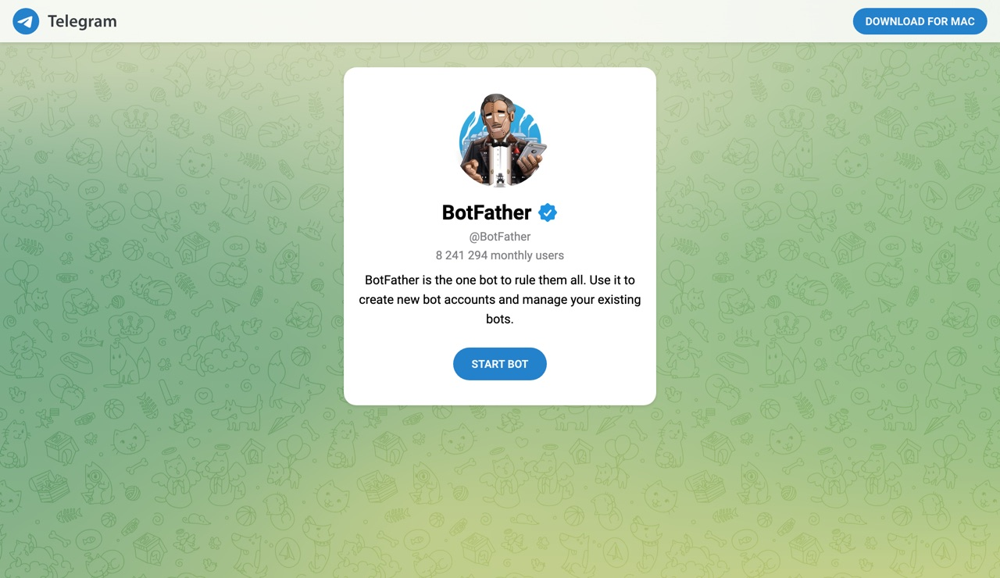
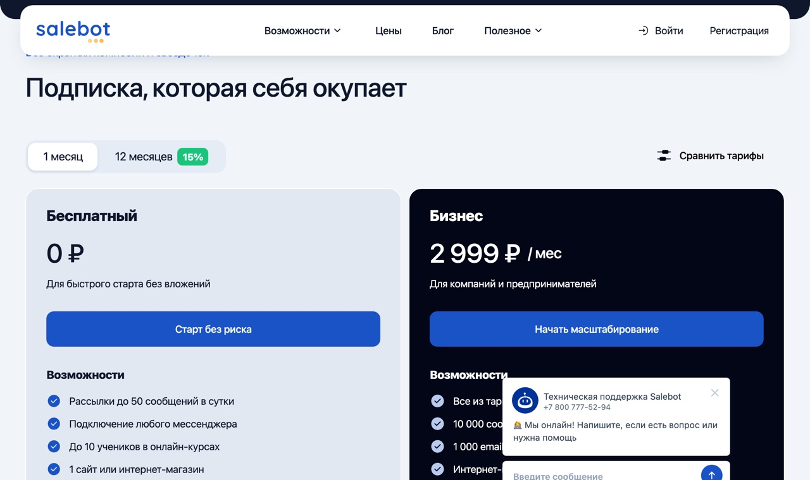
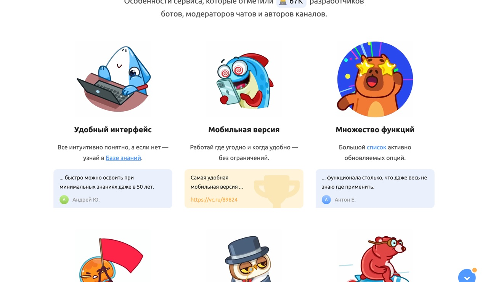

В роликах бота собирают за 15 минут и говорят, что бизнес платит за такое 20-40к. Схема рабочая, но показывают только сборку в конструкторе.
За кадром остаётся то, на чём новичок и застревает: отладка веток, лимиты бесплатного тарифа и разговор с клиентом про оплату подписки. Разбираю всё по порядку.
Про 15 минут из ролика
За 15 минут бота собирает человек, который делал это сто раз. Первый бот займёт вечер: регистрация, токен, логика блоков и проверка каждой ветки. Платят при этом не за бота, платят за закрытую задачу: салон перестал терять заявки в директе, автосервису перестали звонить с вопросом «сколько стоит».
Результат
Что получится на выходе
Telegram · бот салона
Здравствуйте! Отвечу на вопросы и запишу к мастеру 💇 Что интересует?
Услуги и ценыЗаписатьсяКонтакты
Записаться
Как вас зовут?
Ирина
Оставьте телефон, мастер перезвонит и подтвердит время 📞
+7 900 123-45-67
Готово, Ирина. Заявка у мастера, свяжемся в течение часа ✅
Бот отвечает на частые вопросы и собирает заявку. Этого хватает, чтобы бизнес платил
Если работал с Тильдой, разберёшься за вечер
Конструктор ботов устроен как конструктор сайтов: блоки соединяются стрелками, вместо секций страницы — шаги диалога. Код не нужен нигде.
Сборка
Семь шагов
1
Возьми нишу с повторяющимися вопросами
Салон, барбершоп, автосервис, доставка, репетитор, стоматология. Везде спрашивают одно: сколько стоит, где вы, как записаться. Бот закрывает эти ответы и собирает имя, телефон, услугу.
2
Создай бота через @BotFather
Открой
@BotFather, команда /newbot, задаёшь имя и @username, получаешь токен вида 123456:ABC. Бесплатно и без лимитов. Проверь синюю галочку у аккаунта: под этим именем в Telegram полно подделок, которые собирают токены.
3
Подключи токен к Salebot
Открой
salebot.pro, зарегистрируйся, создай проект и вставь токен в подключение Telegram. Конструктор российский, открывается без VPN, оплата рублями, в реестре отечественного ПО. Один проект работает сразу в Telegram, ВК, WhatsApp и на сайте.
4
Собери сценарий из 4-5 блоков
Приветствие с кнопками «Услуги и цены», «Записаться», «Контакты». Под каждой кнопкой блок с ответом. В ветке записи по очереди спрашиваешь имя и телефон, ответы сохраняешь в переменные, в конце выдаёшь подтверждение.
5
Настрой, куда падают заявки
Уведомление владельцу в личку Telegram или строка в Google-таблицу через встроенную интеграцию. Клиенту важно одно: заявка дошла до менеджера и не потерялась.
6
Пройди бота как обычный клиент
Нажми каждую кнопку, пройди ветку записи целиком, проверь, что заявка пришла. Сюда и уходит вечер: сборка быстрая, а поиск веток, где диалог зависает или ведёт не туда, съедает часы.
7
Покажи демо владельцу вживую
Зайди к знакомому бизнесу или напиши в 5-10 местных пабликов и открой готового бота с их логикой прямо в телефоне. Работающий бот продаёт сильнее любого описания услуг.
t.me/BotFather

Шаг 2: настоящий BotFather с синей галочкой
Telegram · @BotFather
/newbot
Alright, a new bot. How are we going to call it?
Салон Ирина бот
Done! Use this token to access the HTTP API:
1234567:AAE••••••••••••
Токен приходит одним сообщением, его и вставляешь в конструктор
Шаг 3: Salebot, регистрация по почте, оплата рублями
Промпт, который пишет тексты для бота
Тексты кнопок и ответов не сочиняй руками, отдай ChatGPT или Claude:
Промпт · тексты для ботаТы пишешь тексты для чат-бота салона красоты в Телеграме.
Сделай: приветствие (до 200 знаков), названия трёх кнопок, ответ на «услуги и цены» списком из пяти строк, ответ на «контакты», три сообщения ветки записи (спросить имя, спросить телефон, подтвердить заявку).
Тон дружелюбный, на «вы», без канцелярита. Не обещай точное время записи, мастер подтверждает сам.
Оплата за проект
Простой бот на кнопках стоит 15-30к. Дальше добавляются интеграции: запись, оплата, CRM, и один проект выходит в суммы вроде этой.
Деньги
Тарифы и цена работы
Бесплатный тариф закончится на живом клиенте
Salebot даёт 50 сообщений в сутки навсегда: хватает на обучение и 5-10 тестовых диалогов. У работающего бизнеса бот съест лимит за час, поэтому платную подписку обсуждай с заказчиком до сдачи.
salebot.pro · тарифы

Бесплатный тариф: 50 сообщений в сутки. Бизнес 2 999 ₽ в месяц, при оплате за год дешевле на 15%
| Что | Сколько |
|---|
| Бот на кнопках, 4-5 блоков | 15-30к разово |
| Бот с интеграциями: CRM, оплата, запись | 20-40к |
| Подписка конструктора, платит клиент | отдельной строкой в счёте |
| Доработки после сдачи | платно, оговорить заранее |
Не обещай, что бот заменит менеджера. Он снимает типовые вопросы и собирает заявки, а возражения и сложные диалоги всё равно уходят человеку. Это же и говори клиенту: так меньше правок после сдачи.
Альтернативы
Другие конструкторы
Puzzlebot
puzzlebot.top
Бесплатная альтернатива под Telegram, порог входа ниже. Оплату платного тарифа из РФ проверяй отдельно.
Aimylogic
aimylogic.com
Российский, но заточен под голосовых роботов и обзвоны. Бесплатный лимит маленький, под текстового бота слабее.
BotHelp
bothelp.io
Новичку из РФ не подходит: бесплатно 14 дней, тарифы в долларах, нужна зарубежная карта.
puzzlebot.top

Puzzlebot: запасной вариант, если Salebot не зашёл
Итог
Первый бот займёт вечер, а не 15 минут. На выходе навык, за который местный бизнес платит 15-30к, собранный на бесплатном тарифе без вложений и диплома программиста.